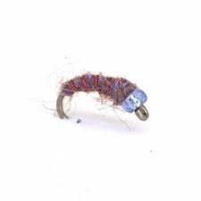

 As winter comes the water gets cold and the trout stack on top of eachother. It is said that only 10% of the river houses 90% of the trout. One must fish the slower seams and pockets of their favorite river to be productive. As for flies the grape slushy is a Missouri River favorite. This little nymph seems to always put fish in the net.